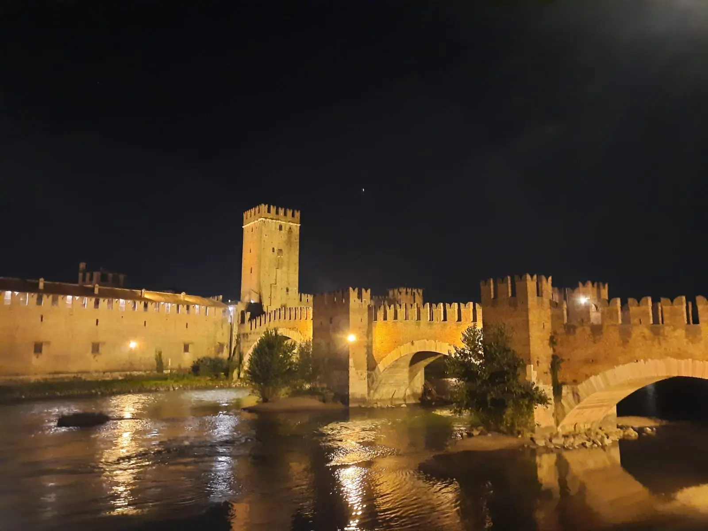
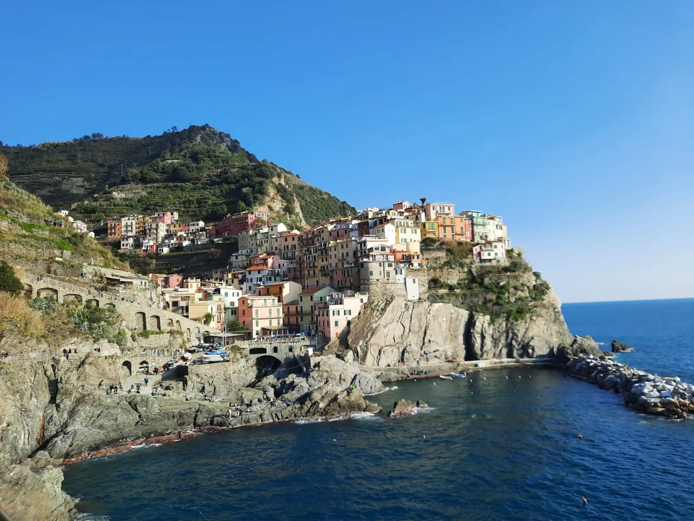
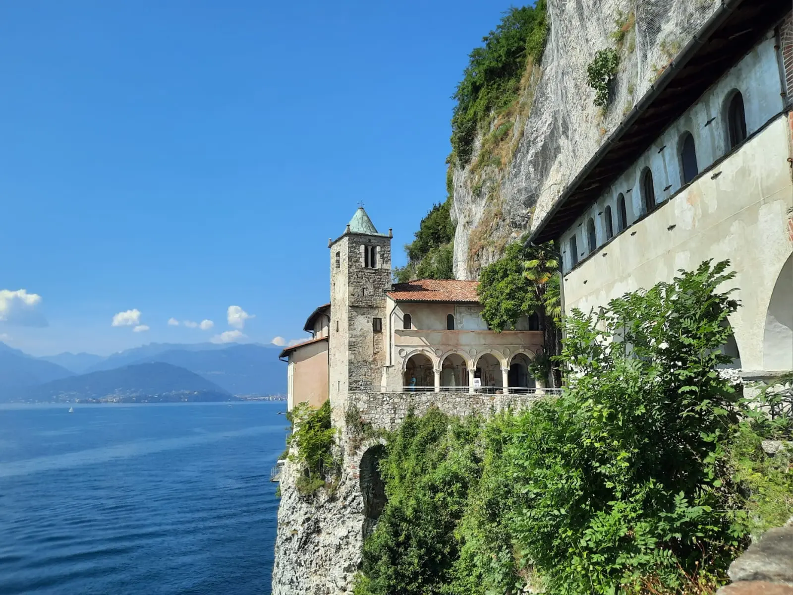
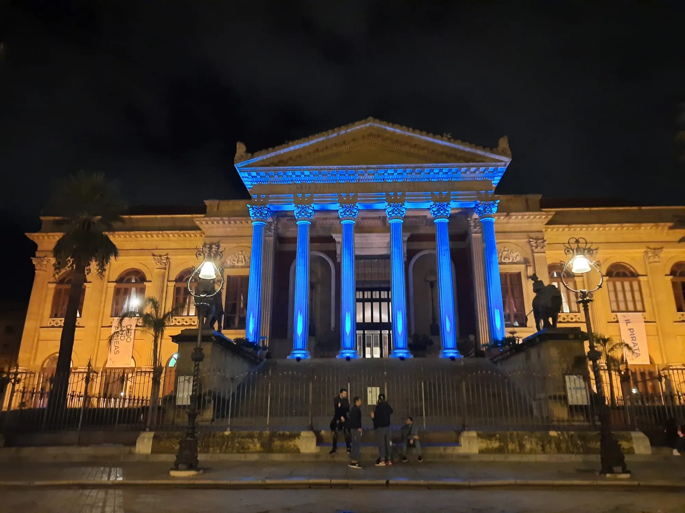
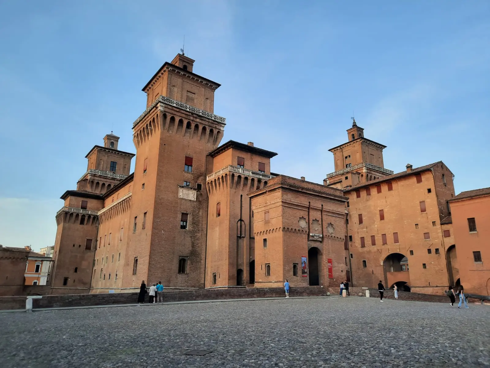

Castelvecchio at night, Verona

A scenic view of the Cinque Terre

Night view of Sasso Caveoso, Matera

Hermitage of Santa Caterina del Sasso

Teatro Massimo at night, Palermo

Estense Castle, Ferrara